The pastel de nata is Portugal's most iconic pastry — a flaky, caramelised custard tart that's been perfected over nearly 200 years. In Lisbon, you'll find one in virtually every pastelaria on every corner. But quality varies wildly, from mass-produced mediocrity to transcendent, warm-from-the-oven perfection.
We analyzed hundreds of Reddit posts from r/portugal, r/lisboa, r/travel, r/food, and r/VisitPortugalGuide to find the spots that actual locals and experienced travelers recommend. Skip the random tourist-trap bakeries — these are the natas worth your time.
📊 How we built this list
We analyzed 200+ Reddit posts and 800+ comments across r/portugal, r/lisboa, r/travel, r/food, r/FoodPorn, and r/VisitPortugalGuide — spanning 2019 to 2026. Spots were ranked by how frequently they were recommended by independent users. We cross-referenced with Time Out Lisbon's annual "Best Pastel de Nata" competition results. Local Portuguese picks were weighted more heavily than tourist posts.
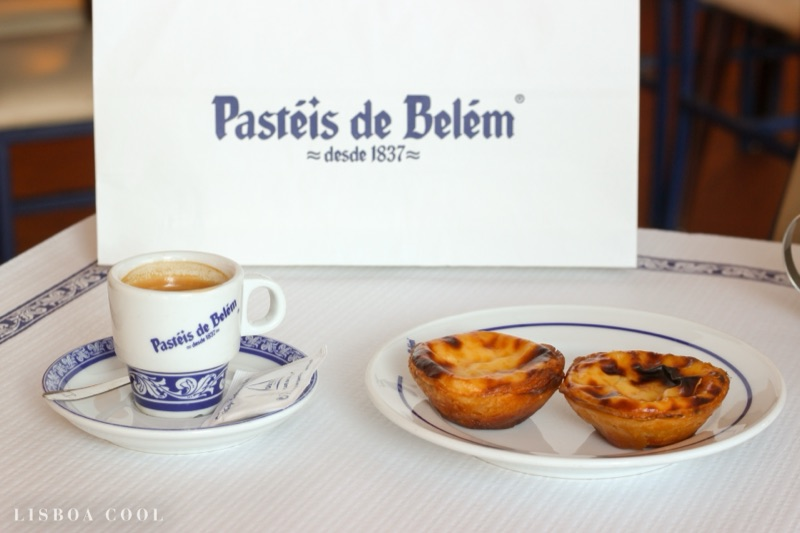
What to order: The pastel de Belém (their trademarked name) — served warm with cinnamon and powdered sugar shakers at the table. Pair with a bica (espresso). Sit inside in the tiled rooms to skip the takeaway queue.
"They've been baking these since 1837, using a secret recipe. They're bigger, flakier, and best enjoyed warm with cinnamon and powdered sugar."
— r/VisitPortugalGuide · posted June 2025
"I had these from three or four different spots in and around Lisbon. Pasteis de Belem was my favorite by a mile, still warm and served with cinnamon and powdered sugar. 10/10 worth it!"
— r/FoodPorn · posted May 2022
tabiji verdict: The original. Yes, there's a queue. Yes, it's touristy. But Reddit overwhelmingly agrees — this is NOT a tourist trap. The secret recipe from the Jerónimos Monastery monks produces a flakier, larger tart that's genuinely different from every other nata in the city. Go before 10 AM or sit inside.
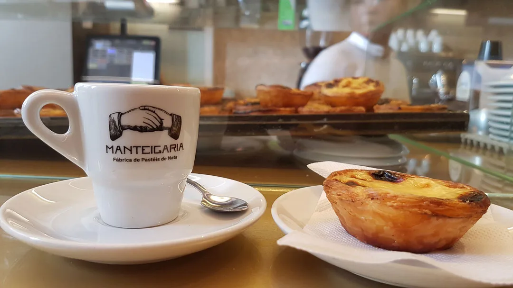
What to order: Their classic pastel de nata — freshly baked all day long. Watch them being made through the glass window. Always served warm. Pair with a galão (Portuguese latte).
"Manteigaria at least once — they come out warm and fresh constantly, and they're one of the most consistently good ones in Lisbon."
— r/VisitPortugalGuide · posted January 2026
"Hands down, one of the best in the city. Freshly baked all day long, with that perfect caramelised top and a super creamy filling."
— r/VisitPortugalGuide · posted June 2025
tabiji verdict: If Belém is the historic champion, Manteigaria is the modern contender. The open kitchen, the constant stream of warm tarts, the perfect caramelised top — this is many locals' actual favorite. The Chiado location is better than the Time Out Market one (less chaotic).
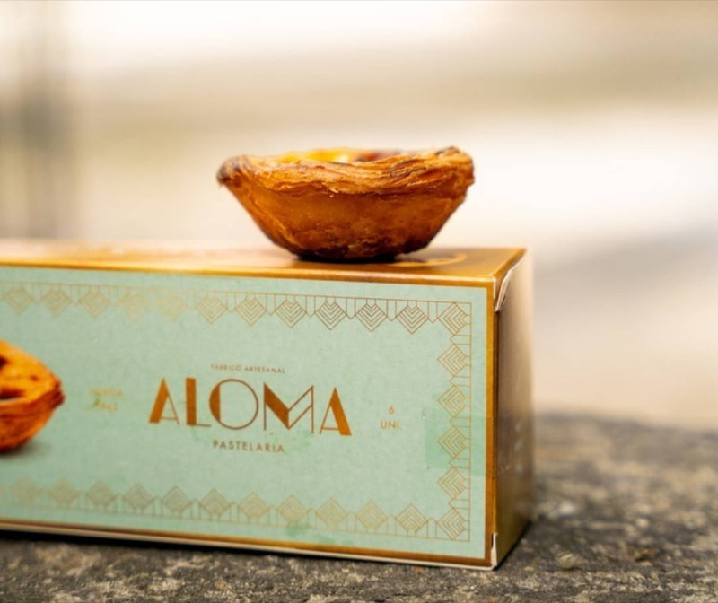
What to order: Their award-winning pastel de nata — crispy layered pastry with a perfectly set custard. Also try their other traditional pastries. Pair with a bica.
"Pastelaria Aloma. Near Jardim Constantino in Lisbon. They won best Lisbon Nata for at least 2 consecutive years."
— r/LisbonPortugalTravel · posted 2025
"Pastelaria Aloma — award-winning and loved by locals, especially in Campo de Ourique."
— r/VisitPortugalGuide · posted June 2025
tabiji verdict: The competition winner. Aloma has taken top honors in Time Out Lisbon's annual "Best Pastel de Nata" contest multiple times. It's in Campo de Ourique — a real Lisbon neighborhood, not a tourist zone — which tells you everything about who eats here. Worth the tram ride.
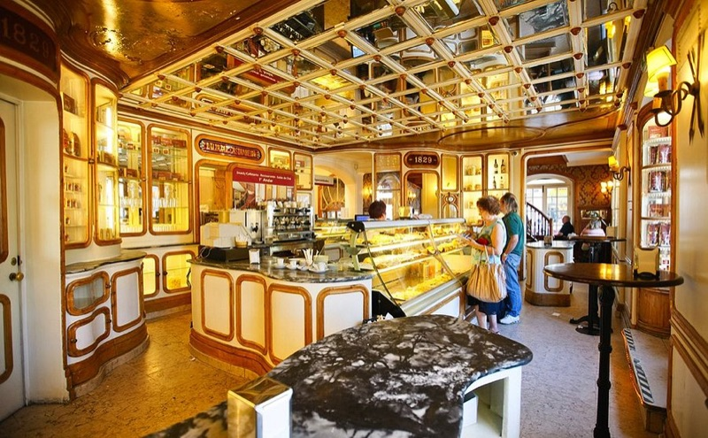
What to order: The pastel de nata, of course — but also explore their full range of traditional Portuguese sweets. The bolo-rei (king cake) is legendary during Christmas season.
"Confeitaria Nacional — one of the oldest pastry shops in Lisbon, great for classic Portuguese sweets."
— r/VisitPortugalGuide · posted June 2025
tabiji verdict: Even older than Pastéis de Belém — open since 1829. This isn't just a nata shop, it's a full-spectrum Portuguese confeitaria. The ornate interior alone is worth a visit. The natas are excellent but it's the overall pastry experience that makes this place special.
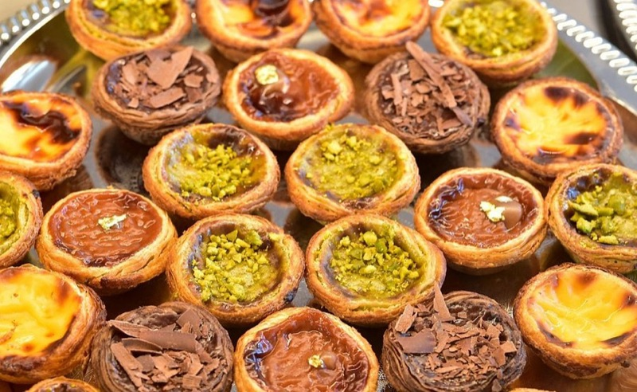
What to order: Their pastel de nata with a richer-than-usual filling. The café has a beautiful traditional azulejo-tiled interior — grab a seat and enjoy the atmosphere.
"Do locals look down on places like Fabrica da Nata? The couple of times I had them they were warm and delicious."
— r/lisboa · posted May 2024
"A great stop if you're exploring downtown Lisbon. Their custard tarts have a slightly richer filling, and the café itself has a beautiful traditional interior."
— r/VisitPortugalGuide · posted June 2025
tabiji verdict: Polarizing — some locals dismiss it as touristy, but the natas are genuinely good. The azulejo interior is gorgeous and the Baixa location is ultra-convenient. A perfectly fine stop when you're already downtown. Not the best in the city, but reliable and photogenic.
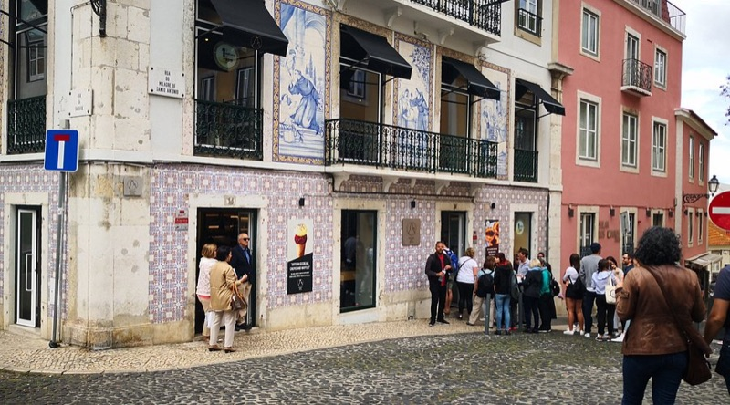
What to order: Their pastel de nata — simple, fresh, and perfectly executed. Grab one (or three) after visiting São Jorge Castle. Cheap and always warm.
"Santo António bakery right next to the St. George castle has incredible pasties de nata."
— r/food · posted November 2024
"My personal favourite was from a small pastry shop near Castelo de S. Jorge, uphill. I think it's called Pastelaria Santo António — Castelo. Highly recommend!"
— r/VisitPortugalGuide · posted January 2026
tabiji verdict: The hidden gem that keeps popping up in Reddit threads. A small neighborhood pastelaria near the castle that just does things right. No pretension, no queue, just really good natas at local prices. The kind of place you'd never find without a tip.
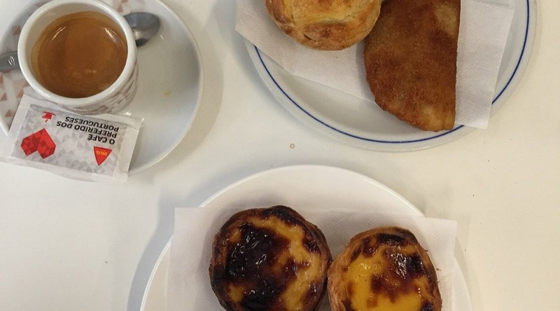
What to order: The pastel de nata — nothing fancy, just a perfectly made traditional tart. Their other pastries are solid too. A true neighborhood pastelaria experience.
"If you're curious about something less touristy, try Pastelaria Cristal (rua de buenos aires 30)."
— r/LisbonPortugalTravel · posted 2025
tabiji verdict: A local insider tip in the Estrela neighborhood. No tourists, no lines, just a classic Lisbon pastelaria where the regulars come for their daily nata and bica. If you want to feel like a local for 10 minutes, this is your spot.
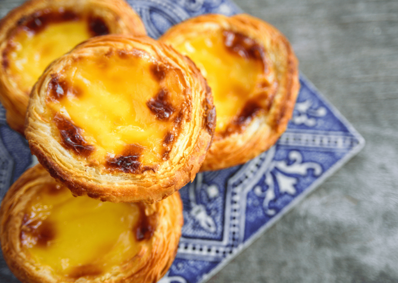
What to order: Their championship-winning pastel de nata — the one that beat every other bakery in Lisbon in 2023. Rich custard, perfectly caramelised, impeccable pastry layers.
"Confeitaria da Glória won Best Pastel de Nata in Lisbon 2023 in the Time Out competition."
— Time Out Lisbon · September 2023
tabiji verdict: The official 2023 champion. When a blind tasting of Lisbon's best bakeries crowns you the winner, that's not marketing — that's merit. Near Avenida da Liberdade, so easy to visit between sightseeing. A must-try for serious nata hunters.
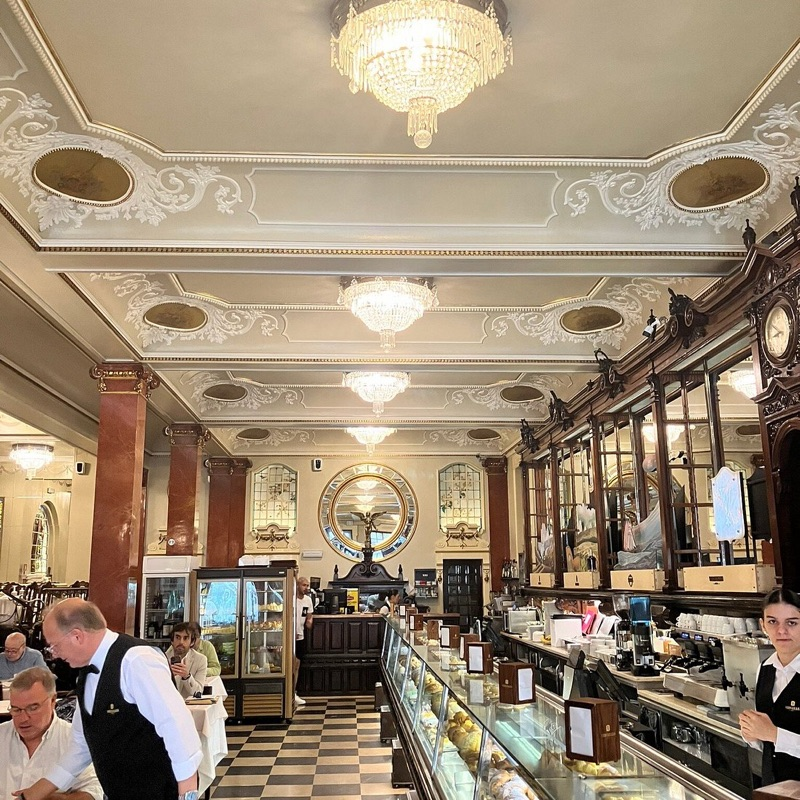
What to order: Pastel de nata with a galão, enjoyed at a marble table under chandeliers. Also try their croissants and bifana (pork sandwich). The full Portuguese café experience.
"Pastelaria Versailles feels like stepping into another century. The natas are great, but it's really about the whole atmosphere — chandeliers, waiters in bow ties, marble everywhere."
— r/travel
tabiji verdict: Come for the nata, stay for the belle époque grandeur. This isn't the best nata in Lisbon, but the experience of eating one in a chandeliered, mirrored salon from another era is unforgettable. Very few tourists make it up to Saldanha.
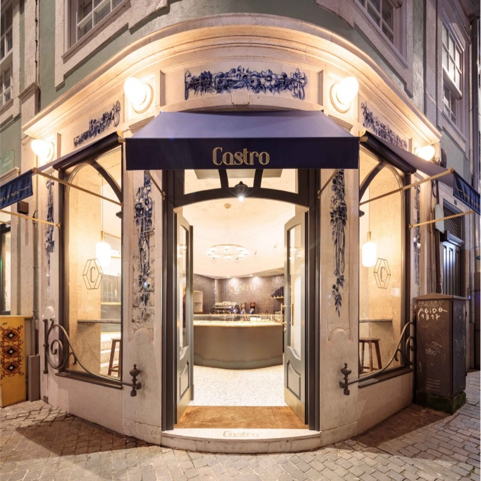
What to order: Their classic nata or try the creative flavors — chocolate, pistachio, or seasonal specials. The open kitchen lets you watch the process.
"I never realized lemon was common in pastéis de nata. I don't detect lemon in the ones from Belem, Manteigaria, Fabrica, Castro, Alcôa, Aloma, Santo Antonio."
— r/lisboa · posted May 2024
tabiji verdict: A newer player that takes the nata seriously as a craft. The artisan approach with creative flavors won't appeal to purists, but if you're on your 10th nata and want something different, Castro's variations are fun. The classic version holds its own against the big names.
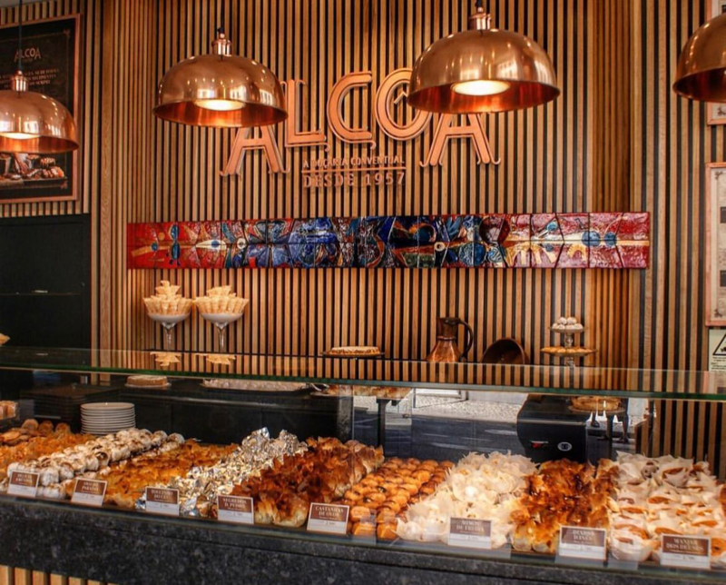
What to order: The pastel de nata, but don't stop there — Alcôa specializes in conventual (monastery) sweets. Try the ovos moles de Aveiro and the travesseiros. A full Portuguese pastry education.
"Alcôa is the place to try monastery sweets. The nata is excellent, but the real draw is their conventual pastries — recipes from actual monasteries."
— r/portugal
tabiji verdict: Originally from Alcobaça (home of the famous monastery), their Chiado outpost brings monastery pastry traditions to central Lisbon. The nata is very good, but Alcôa's real superpower is the wider range of conventual sweets you won't find elsewhere. A pastry nerd's paradise.
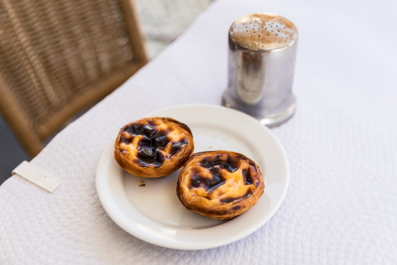
What to order: Their pastel de nata — always warm, always crunchy. The cream is divine. Simple, perfect, cheap.
"Pastelinho de Benfica, in Estrada de Benfica. Always warm and crunchy, and the cream is divine."
— r/LisbonPortugalTravel · posted 2025
tabiji verdict: Deep in a residential Lisbon neighborhood, far from any tourist trail. This is where Benfiquistas grab their post-match nata. If you're staying near Benfica or visiting the Estádio da Luz, don't miss it. Zero pretension, maximum satisfaction.

What to order: Their reimagined pastel de nata — chef José Avillez puts a gourmet twist on the classic. Also explore the rest of his food hall concept.
"Bairro do Avillez — more gourmet and modern, for those looking for a twist on the traditional."
— r/VisitPortugalGuide · posted June 2025
tabiji verdict: José Avillez is Portugal's most famous chef (Michelin-starred Belcanto). His take on the nata is more refined and expensive, but undeniably delicious. Come here after you've tried the traditional versions and want to see what a world-class chef does with the format.
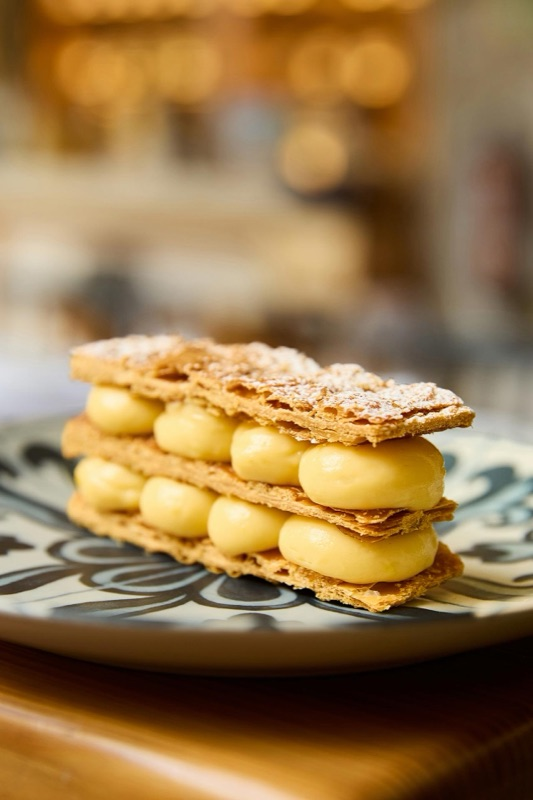
What to order: Their classic nata or one of the creative flavors. The gift boxes make great souvenirs. Convenient locations throughout downtown.
"Nata Lisboa is decent — not the best, not the worst. Convenient locations and you can get nice gift boxes to bring home."
— r/travel
tabiji verdict: A polished, tourist-friendly chain that delivers a consistent product. Not where locals go, but the natas are perfectly good and the multiple locations make it convenient. The gift packaging is genuinely useful for bringing natas home.
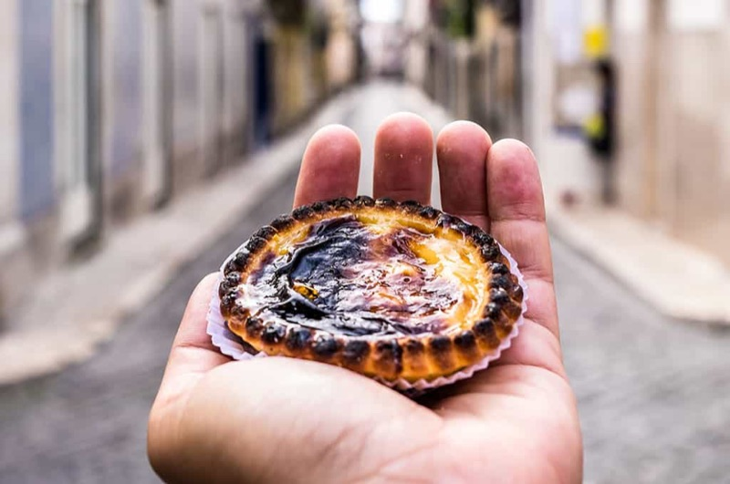
What to order: The pastel de nata that won Time Out Lisbon's competition. A simple neighborhood padaria with championship-caliber tarts.
"Last year's winner, Padaria da Né in the suburb of Damaia. The most famous pastel de nata spot in Lisbon, Pastéis de Belém, did not feature on the list."
— Time Out Lisbon · October 2022
tabiji verdict: A former Time Out champion tucked away in the suburbs. This is a pilgrimage for serious nata hunters — it proves that the best tarts aren't always in the tourist center. Worth the trip if you're a completionist, but casual visitors can skip the suburban detour.
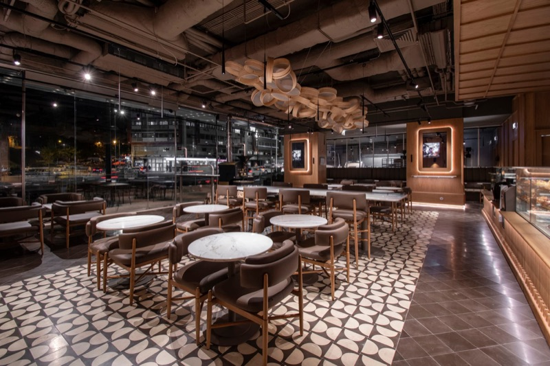
What to order: Their artisan pastel de nata — a finalist in Lisbon's annual nata competition. Also excellent bread (the name doesn't lie) and other pastries.
"Bread & Friends at Epic Sana Marquês were among the pastry shops who made it to the final stage — it's safe to say they all make a great pastel de nata."
— Time Out Lisbon · September 2023
tabiji verdict: Inside the Epic Sana hotel, so it doesn't feel like a traditional pastelaria — but don't let the hotel setting fool you. This bakery made it to the finals of the city's toughest nata competition. Great option if you're staying nearby or exploring the Marquês area.
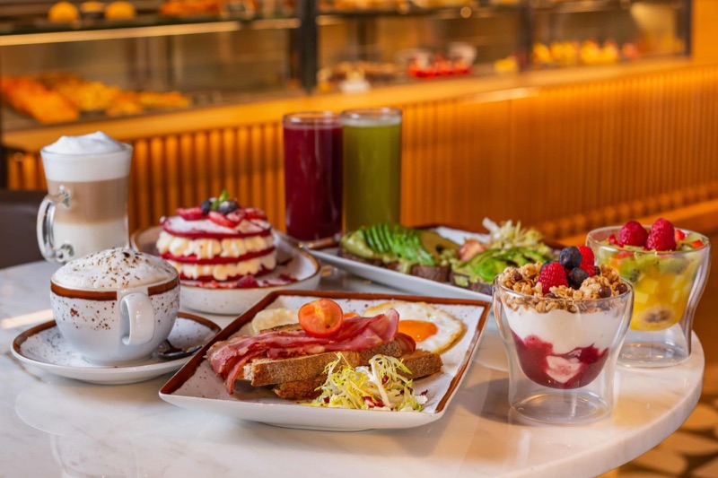
What to order: A pastel de nata and a bica at the bar — the way Fernando Pessoa would have done it. The terrace has a surcharge but the interior is pure art nouveau.
"A Brasileira is touristy, yes — but the café itself is beautiful and the natas are solid. Sit inside, skip the overpriced terrace, and pretend you're Pessoa."
— r/portugal
tabiji verdict: The most famous café in Portugal — Fernando Pessoa's haunt, with his bronze statue still sitting outside. The nata isn't the city's best, but the combination of a warm tart and a bica in this art nouveau masterpiece is a quintessential Lisbon moment. Avoid the terrace markup.
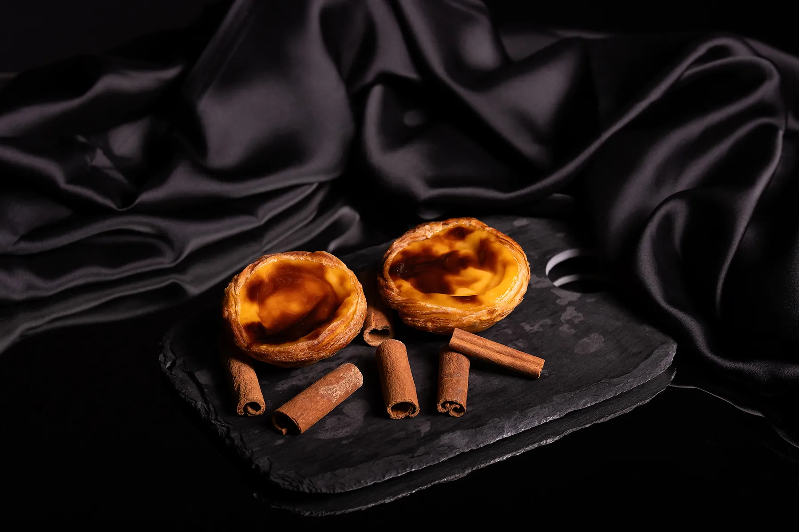
What to order: The pastel de nata — the one that earned podium placement in Lisbon's toughest competition. Simple, traditional, exceptional.
"Completing the podium was Pastelaria Patyanne in the northern suburb of Castanheira do Ribatejo."
— Time Out Lisbon · October 2022
tabiji verdict: Way out in the suburbs — this is for the truly obsessed nata hunter. A podium finisher in Time Out's blind tasting, proving once again that Lisbon's best tarts often hide far from the tourist trail. Only visit if you're renting a car and want bragging rights.
Frequently Asked Questions
What is the best pastel de nata in Lisbon?
Based on Reddit consensus, Pastéis de Belém and Manteigaria are the two most recommended spots. Belém is the historic original with a secret monastery recipe; Manteigaria is the modern challenger with a perfect caramelised top. For competition-verified quality, Pastelaria Aloma and Confeitaria da Glória have won Time Out Lisbon's annual blind tasting.
Is Pastéis de Belém a tourist trap?
No — Reddit overwhelmingly agrees it's legit. Yes, there are long lines and tourists, but the pastéis themselves are genuinely excellent — flakier, larger, and made with a secret recipe since 1837. Pro tip: sit inside in the tiled dining rooms to bypass the takeaway queue. Go before 10 AM or after 3 PM for shorter waits.
How much does a pastel de nata cost in Lisbon?
Most pastéis de nata cost €1.00–€1.50 at local pastelarias. Tourist-facing spots may charge €2.00–€2.50. Gourmet versions at places like Bairro do Avillez can reach €3.00–€4.00. At these prices, you should absolutely try multiple spots and compare — it's practically free research.
What's the difference between a pastel de nata and a pastel de Belém?
Only the custard tarts from Pastéis de Belém can officially be called "pastéis de Belém" — they use a secret recipe from the Jerónimos Monastery dating to 1837. Every other bakery's version is a "pastel de nata." Belém's version tends to be slightly larger with a flakier pastry, but many locals argue the difference is more historical than substantial.
Should I eat pastéis de nata warm or cold?
Always warm if possible. A warm pastel de nata straight from the oven is a completely different experience — crispier pastry, creamier custard, more pronounced caramelisation. Ask if they have fresh ones coming out. Most good pastelarias bake throughout the day. Manteigaria is famous for having warm ones available constantly.
How should I eat a pastel de nata like a local?
Order it with an espresso — called "uma bica" in Lisbon. Sprinkle cinnamon and powdered sugar on top (most shops have shakers on the counter). Eat it standing at the counter for the true local experience. And don't stop at one — at under €1.50 each, having two or three is practically mandatory. The phrase you need: "Dois pastéis de nata e uma bica, por favor."